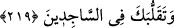
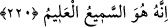

Şer’î örfte “kıyâm” geceyi namazla ihya etmeye denir. Bir hadîste: “Farz
namazlardan sonra en fazîletli namaz, gece namazıdır.”[32] buyrulmuştur.
Âişe (r.a.)’dan rivâyete göre Hz. Peygamber (s.a.) gece namazını bırakmazdı.
Hastalandığı veya yorgun olduğu zaman oturarak kılardı.[33] Yine Âişe (r.a.)’dan
rivâyete göre o bir ağrı vaya başka sebeple gece namazını kılamazsa gündüz on iki rekat
namaz kılardı.[34]
Fakir (Bursevî) der ki: Hz. Peygamber (s.a.)’in geceleyin kaçırdığı teheccüdün yerine
gündüz kıldığı bu on iki rekat namaz, teheccüdün diğer nafîleler gibi olmadığına delâlet
eder. Bilakis onun diğerlerine göre ayrı bir fazîlet ve üstünlüğü vardır. Bu yüzden
nâfileler kazâ edilmediği halde teheccüd kaçırıldığı zaman onun bedelini yerine
getirmek tavsiye edilir.
219. Secde edenler arasında dolaşmanı da (görüyor).
“__WORD__ dönüp dolaşmak demektir. Yâni teheccüde kalkanların durumlarının hakîkatine
muttali olmak için onların hallerini araştırmak üzere dolaşmanı da görüyor. Nitekim
rivâyet edildiğine göre gece namazı Hz. Peygamber (s.a.)’e ve ümmetine önceden vâcib
iken sonradan onun farziyeti neshedildi. En doğru görüş budur. İbn Abbas’tan (r.a.)
şöyle rivâyet edilmiştir: “Teheccüd, önceki peygamberlere farzdı.” İşte gece ibâdeti
neshedildiği zaman Hz. Peygamber (s.a.) o gece ashâbın ne yaptıklarına bakmak için
onların evlerini dolaştı. Yâni mi’rac gecesi beş vakit namazın farz kılınmasıyla
teheccüdün farziyeti neshedildiği için gece ibâdetini terk ettiler mi diye onların
tâatlerinin çok olmasına hırslı olduğundan dolayı dolaştı. Onların evlerinde zikrullah ve
Kur’ân tilâveti seslerini işitince o evleri arı kovanı gibi buldu.
220. Çünkü her şeyi işiten, her şeyi bilen O’dur.
“Çünkü her şeyi” senin söylediklerini ve kullarının duâlarını ve sırların münâcâtını
“işiten, her şeyi” senin niyetini, onların maslahatlarını ve içlerinde taşıdıkları irâdeleri
“bilen O’dur.”
Bazıları demiştir ki: “__WORD__ imam olduğun zaman namaz kılanlar arasında
kıyâm rükû, sücûd/secde ve kuûd tasarruflarını/hareketlerini görür. Bu durumda “